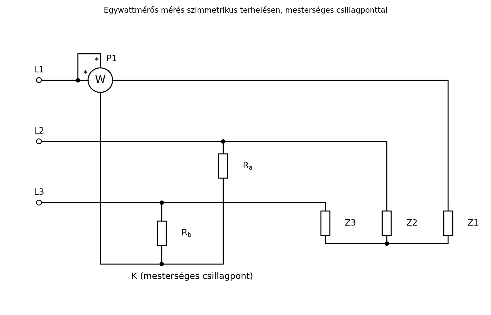
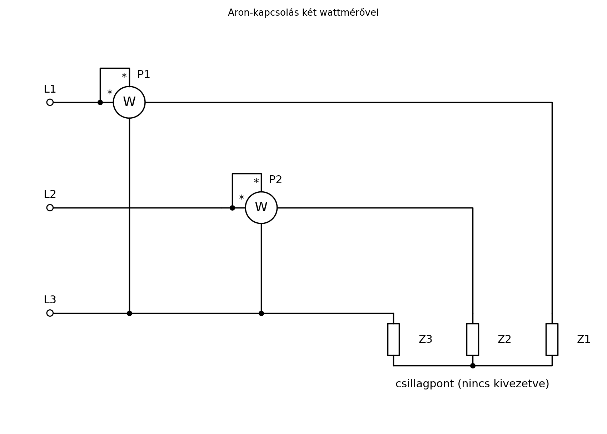
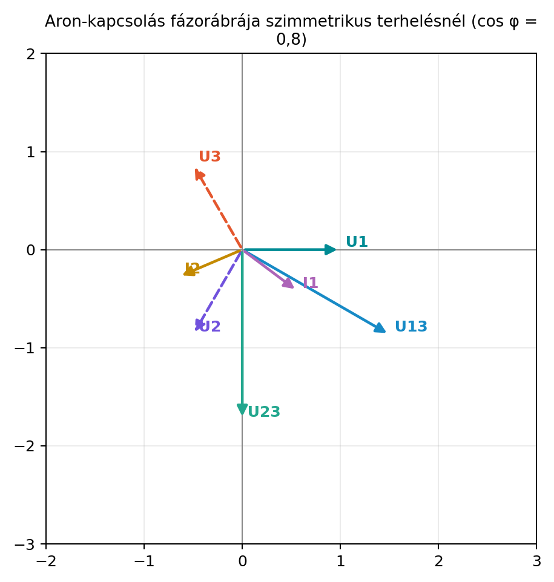
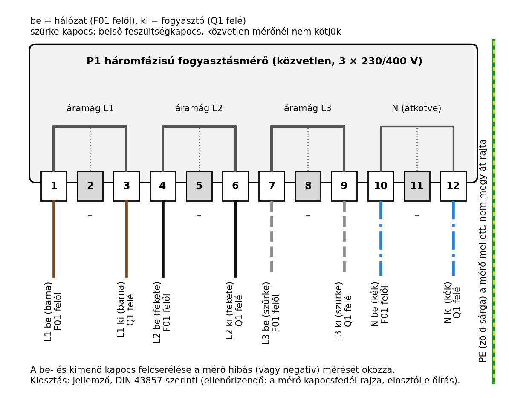
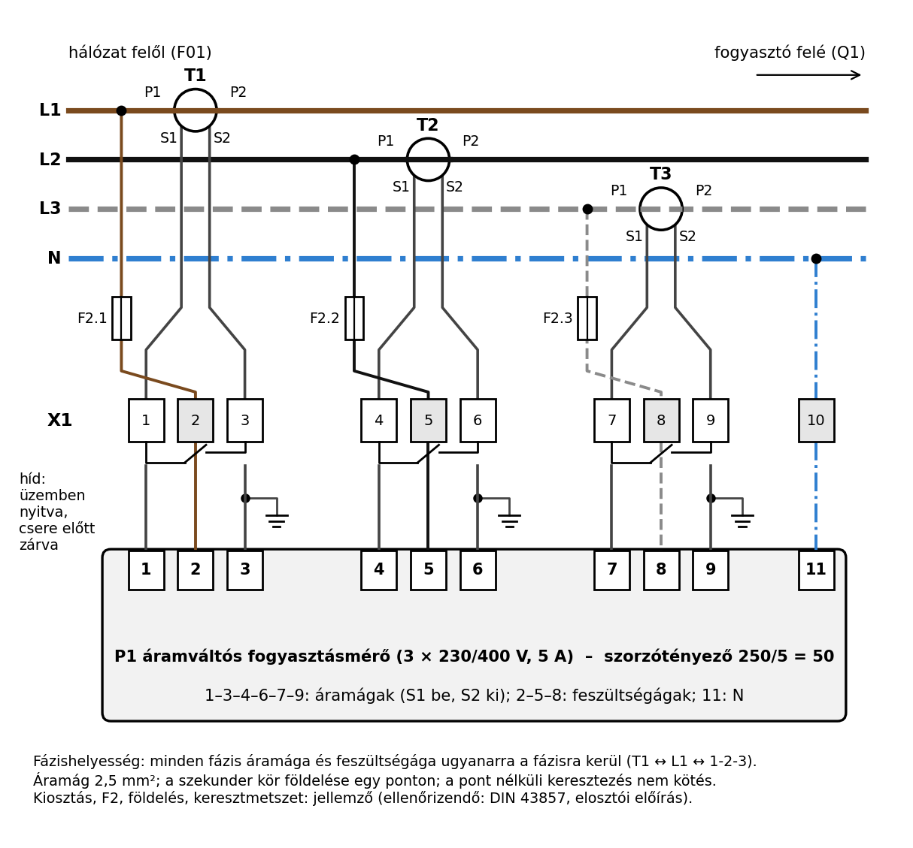

Egy társasházban villanyszerelőként új mérőhelyet kell kialakítani. Az ügyfél nemcsak arra kíváncsi, hogy „van-e áram”, hanem arra is, hogy egy régi klímaberendezés, egy új sütő vagy egy műhelyben üzemelő motor mennyit fogyaszt, és hogy az elosztóban elhelyezett mérőműszer valós terhelésnél helyesen mér-e. A munkahelyi kérdés tehát nem csupán az, hogy a multiméterrel feszültséget és áramot tudunk mérni, hanem az is, hogy ezekből hogyan lesz teljesítmény, energia és elszámolási mérőállás. A teljesítmény- és energiamérés az alapja annak, hogy ellenőrizni tudjuk egy fogyasztó valódi terhelését, igazoljuk a hálózati csatlakozás elégségességét, és megértsük a fogyasztásmérő, valamint az áramváltós mérés működését.
Egy egyfázisú dugaszoló aljzatba bedugott 230 V-os hősugárzó adattáblája szerint 2,3 kW-ot vesz fel. A lakatfogóval mért áram 10 A. Ha egyszerűen összeszorozzuk a feszültséget és az áramot, értéket kapunk. Ez a hősugárzónál szinte teljes egészében hatásos teljesítmény, mert a fűtőszál gyakorlatilag ohmos ellenállás. Egy motor azonban ugyanilyen 10 A-es áramfelvételnél kevesebb mechanikai munkává alakítható teljesítményt vehet fel, mert a mágneses tere fenntartásához úgynevezett meddő teljesítményt is keringtet. A teljesítménymérés éppen ezért több, mint az szorzat: meg kell különböztetnünk a hatásos, meddő és látszólagos teljesítményt, és meg kell mérnünk, hogy egy fogyasztó hosszabb idő alatt mennyi energiát használ el.
Definíció. A váltakozó áramú hatásos teljesítmény az egy periódus alatt a fogyasztóban hővé, mechanikai munkává vagy más hasznos formává alakított átlagteljesítmény:
Az és itt effektív érték, pedig a feszültség és az áram közötti fázisszög koszinusza, azaz a teljesítménytényező.
Definíció. A meddő teljesítmény olyan, a mágneses vagy villamos térrel kapcsolatos teljesítmény-lüktetés, amelyet a hálózatnak szállítania kell, de hasznos munkává nem alakul:
Mértékegysége a var (volt-amper reaktív), gyakorlatban kvar vagy Mvar.
Definíció. A látszólagos teljesítmény a feszültség és az áram effektív értékének szorzata:
Mértékegysége a voltamper (VA). A három mennyiség kapcsolata:
Definíció. A villamos energia a hatásos teljesítmény idő szerinti integrálja, illetve állandó teljesítmény esetén:
A fogyasztásmérő számlapján a kilowattóra (kWh) az elszámolási egység. Egy kWh az 1 kW hatásos teljesítménnyel egy órán át végzett energiafogyasztás.
Ezeket az összefüggéseket használjuk a későbbi mérőhelyi fejezetekben is, például a Csatlakozás a közcélú hálózathoz, mérőhely alfejezetben.
Szabály. A hagyományos elektrodinamikus wattmérő két tekercset tartalmaz: az áramtekercset a fogyasztóval sorba kötik, a feszültségtekercset pedig a fogyasztóval párhuzamosan. A műszer kitérése arányos a pillanatnyi szorzat átlagával, tehát a hatásos teljesítménnyel.
A műszer két ágának kezdőkapcsát csillag
(*) vagy pont jelöli (egyes műszereken ±).
Helyes bekötésnél a két * kapocs össze van kötve, és a
hálózat felőli oldalon van: az áram a *
kapcson lép be az áramágba, a feszültségág * kapcsa
ugyanerre a pontra csatlakozik. Ha valamelyik ág fordítva kerül be, a
műszer visszafelé tér ki (negatív értéket mutat). A kapcsolási rajzon a
wattmérő egy „W” betűs kör: a körön vízszintesen átmenő ág az
áramág (sorosan a vezetőben), a kör felső és alsó
kivezetése a feszültségág (párhuzamosan a
fogyasztóval). Az alábbi rajzon kövesd végig: hol lép be az áram, és
melyik két pont közötti feszültséget kapja a feszültségág?
A rajzon az L vezető áramát a P1 áramága méri, a feszültségága pedig
a * csomóponttól az N-ig a teljes 230 V-ot kapja; így a
műszer a fogyasztó
teljesítményét mutatja (a saját áramágán eső kis feszültség
elhanyagolható).
A modern elektronikus mérőműszerek ugyanezt a mérést feszültség- és árammintavételezéssel végzik, majd digitálisan számítják a hatásos, meddő és látszólagos teljesítményt, a teljesítménytényezőt és a felharmonikus tartalmat is.
A háromfázisú rendszerben a hatásos teljesítmény szimmetrikus terhelésnél:
ahol a vonali feszültség, a vonali áram. Ezt a képletet a Csillag és delta kapcsolás és a Háromfázisú teljesítmény, aszimmetria és a nullavezető alfejezetben már levezettük. A mérés szempontjából fontosabb, hogy aszimmetrikus terhelésnél sem elég egyetlen szorzatot mérni.
A háromfázisú teljesítmény mérésére három klasszikus bekötés van: a
háromwattmérős, az egywattmérős és a
két wattmérős Aron-kapcsolás. Mindháromban ugyanaz a
wattmérő-szabály érvényes: az áramág sorosan a mért fázisvezetőben, a
feszültségág a hozzá tartozó feszültségre kötve, a *
kezdőkapcsok a hálózat felőli oldalon.
Háromwattmérős módszer. Négyvezetékes (L1, L2, L3, N) hálózaton minden fázisba külön wattmérő kerül: a P1, P2, P3 áramága sorosan az L1, L2, L3 vezetőben, a feszültségága a saját fázis és az N között. Mindegyik műszer a saját fázisának teljesítményét méri, ezért az eredmény aszimmetrikus terhelésnél is pontos. A lakások és üzemek négyvezetékes hálózatán ez a jellemző eset. Az alábbi rajzon kövesd végig mindhárom wattmérő feszültségágát az N-ig!

Szabály. Négyvezetékes hálózaton, tetszőleges (aszimmetrikus) terhelésnél:
Egywattmérős módszer. Ha a terhelés biztosan szimmetrikus (például egy ép háromfázisú motor vagy fűtőtest), a három fázis teljesítménye egyenlő, így elég egy fázist mérni és háromszorozni: . A P1 áramága az L1-ben van, a feszültségága L1 és N közé kerül. Háromvezetékes hálózaton (N nélkül, például motornál) a feszültségág egy mesterséges csillagpontra (K) csatlakozik: ezt két előtét-ellenállás képezi az L2 és az L3 felé, mindkettő ellenállása egyenlő a wattmérő feszültségágának ellenállásával, így a feszültségág éppen az L1 fázisfeszültségét kapja. Figyeld meg a rajzon, hogy a K pont a három egyenlő ellenállás (feszültségág, R_a, R_b) csillagpontja!

Melyik módszert válasszam?
| Hálózat | Terhelés | Módszer |
|---|---|---|
| négyvezetékes (L1, L2, L3, N) | aszimmetrikus (vagy ismeretlen) | három wattmérő: |
| háromvezetékes (N nélkül) | bármilyen (szimmetrikus vagy aszimmetrikus) | két wattmérő, Aron-kapcsolás: |
| három- vagy négyvezetékes | biztosan szimmetrikus | egy wattmérő: (háromvezetékesnél mesterséges csillagponttal) |
A mai elektronikus háromfázisú (négyvezetékes) fogyasztásmérők és teljesítménymérők belül a háromwattmérős elvet valósítják meg: fázisonként mintavételezik a fázisfeszültséget és a fázisáramot, és a három fázis teljesítményét összegzik.
Szabály. Háromvezetékes, háromfázisú rendszerben a hatásos teljesítmény két wattmérővel mérhető az Aron-kapcsolás szerint. A két wattmérőt két fázisvezetőbe kötik be, a feszültségtekercseket pedig a harmadik fázishoz csatlakoztatják. A teljes hatásos teljesítmény a két wattmérő algebrai összege:
A módszer háromvezetékes rendszerben érvényes (mert ott ); nullavezetővel ellátott, aszimmetrikusan terhelt hálózatban a fenti háromwattmérős bekötés kell.
Az Aron-kapcsolás érdekessége, hogy az egyik wattmérő kitérése esetén negatív (lásd a lenti levezetést). A wattmérő ilyenkor visszafelé mutat; a feszültségág polaritását meg kell fordítani, és az így leolvasott értéket a másik műszerből ki kell vonni. A gyakorlatban az elektronikus háromfázisú fogyasztásmérők ezt a feszültség- és áramjelek együttes mintavételezésével oldják meg, így negatív előjelű teljesítmény is gond nélkül kezelhető.

A rajzon mindkét feszültségág az L3-ra fut: az L3 áramát egyik műszer sem méri, mégis benne van az összegben, mert háromvezetékes rendszerben . Hasonlítsd össze a háromwattmérős rajzzal: ott a feszültségágak közös pontja az N volt.
Miért lehet negatív az egyik wattmérő? (levezetés-vázlat szimmetrikus terhelésre) A P1 feszültségága az vonali feszültséget kapja, árama az ; a P2 feszültségága az -at, árama az . Az alábbi fázorábrán (referencia: vízszintesen jobbra) olvasd le a két szöget: az a -hez képest 30°-kal késik, az pedig -vel, ezért a P1 műszer szöge ; az és az között a szög.

A wattmérő a feszültségága és az árama szorzatát a köztük lévő szög koszinuszával szorozza, így ( vonali feszültség, vonali áram):
A különbségből pedig , a kettő hányadosából:
| 1 | 10 A | 3,46 kW | 3,46 kW | 6,93 kW |
| 0,8 | 10 A | 3,97 kW | 1,57 kW | 5,54 kW |
| 0,5 | 20 A | 6,93 kW | 0 kW | 6,93 kW |
| 0,3 | 15 A | 4,42 kW | −1,30 kW | 3,12 kW |
Szabály. Szimmetrikus terhelésnél -nél a két kijelzés egyenlő; -nél (, ) a ; alatt a negatív: a műszer visszafelé tér ki, a feszültségága polaritását meg kell cserélni, és a leolvasott értéket a -ből ki kell vonni.
A feladatgyűjteménybeli (8.4) példára: , ebből és – a motor jól terhelt. A váltakozó áramú teljesítménymérés és a két wattmérős (Aron-) mérés tanműhelyi gyakorlata az Alapmérések gyakorlata: feszültség, áram, ellenállás, teljesítmény alfejezetben szerepel.
Az alábbi grafikon a két kijelzést mutatja a függvényében. Keresd meg, hol metszi a szaggatott -görbe a nulla vonalat, és hol egyenlő a két kijelzés! A HTML-kiadásban a grafikon helyén négyszintű gyakorló van (A: két kijelzésből a teljesítmény, B: , , ismeretében a két kijelzés, C: két módon, D: negatív kitérés – valódi vagy hibás bekötés?), ellenőrzéssel, tipikushiba-üzenettel és lépésenkénti megoldással.
Definíció. A cosφ-mérő (teljesítménytényező-mérő) azt mutatja, hogy a hálózatból felvett áram mekkora fázisszöggel késik vagy siet a feszültséghez képest. Az ipari gyakorlatban gyakran kapcsolják egyfázisú vagy háromfázisú mérőpanelre, ahol a wattmérővel, ampermérővel és voltmérővel együtt a teljes villamos állapot áttekinthető.
Az induktív fogyasztóknál (motorok, transzformátorok, fénycsőfojtók) az áram késik a feszültséghez képest, ezért késő (induktív). A kapacitív körökben (kompenzáló kondenzátorok) az áram siet, és a teljesítménytényező előjelét a mérőműszer skálája is jelzi.
Megjegyzés. A teljesítménytényezőt mérhetjük közvetetten is: , és méréséből:
Ez azért hasznos, mert egy hagyományos multiméterrel és wattmérővel is ellenőrizhetjük, nincs szükség külön cosφ-mérőre.
Definíció. A fogyasztásmérő (villamos energia mérő, köznyelven villanyóra) a fogyasztó által felhasznált hatásos energiát összegzi, általában kWh-ban. A régi elektromechanikus típus egy forgó alumíniumtárcsával rendelkezik, amelynek fordulatszáma arányos a hatásos teljesítménnyel, a tárcsa fordulatait pedig számláló görgeti át. A tárcsa szélén lévő festett jel segítségével a fordulatszám és a felvett teljesítmény összehasonlítható.
Az elektromechanikus mérő kapcsolási elve hasonló a wattmérőhöz: egy áramtekercs és egy feszültségtekercs hoz létre olyan nyomatékot, amely a tárcsát forgatja. A tárcsát fékező mágnes tartja a fordulatszámot a teljesítménnyel arányos tartományban. Fontos, hogy ez a fajta mérő a hatásos energiát méri, mert a nyomatékképzésben a is szerepet játszik.
Az alábbi ábra a tárcsás mérőt kívülről és belülről mutatja. Elölnézetben (a) az 1 görgős számlálómű kWh-ban mutatja a mérőállást, a 2 résben látszik a tárcsa pereme a festett jellel, a 3 adattáblán szerepel a C mérőállandó (a fejezet példájában 375 ford./kWh), a 4 kapocsfedelet az 5 plomba zárja. A vázlatos belső szerkezetben (b) a 6 feszültség-elektromágnes sok menetű, vékony huzalú tekercse L és N közé, a 7 áram-elektromágnes kevés menetű, vastag vezetője sorosan kapcsolódik; a köztük forgó 8 alumíniumtárcsát a 9 állandó mágnes fékezi, a tengely a 10 csigahajtáson át hajtja a számlálóművet.

A 2 résben látható festett jel teszi lehetővé a lenti számítási példa fordulatszámlálását: a jel áthaladásait számoljuk adott idő alatt. A kapocsfedél és a plomba miatt a mérőt a szerelő nem bontja; a bemutató mérést is csak oktató végzi védett mérőpanelen. A HTML-kiadásban a részekre mutatva megjelenik a nevük és a szerepük.
Definíció. Az elektronikus fogyasztásmérő feszültség- és árammintákat vesz, digitálisan számítja a teljesítményt és az energiát. Nem tartalmaz mechanikus tárcsát, ezért kevésbé érzékeny a szerelési helyzetre, és gyakran impulzuskimenettel rendelkezik. A kijelzőn az összesített energia mellett megjelenhet a pillanatnyi , , , és akár a meddő energia is.
Definíció. Az okosmérő elektronikus fogyasztásmérő, amely kommunikációs csatornával (vezetékes vagy rádiós) továbbítja a mérőállást és a mért adatokat a hálózati engedélyes vagy a fogyasztó felé. A fogalom pontos jogszabályi besorolása és kötelező funkciói időben változnak (ellenőrizendő: aktuális rendelet). A szerelő számára az a fontos, hogy az okosmérő ugyanúgy mért energiaelszámoló eszköz, amelyet csak jogosult személy, illetve az elosztói engedélyes bonthat, köthet és plombálhat.
Az alábbi ábra egy egyfázisú, közvetlen bekötésű elektronikus mérőt mutat. Elölnézetben (a) az 1 LCD kijelző az összesített energiát mutatja, a 2 impulzus-LED a mérőállandónak megfelelő ütemben villan (a felirat, például 1000 imp/kWh, csak példa), a 3 optikai porton olvasható ki a mérő, a 4 adattáblán a névleges adatok, az 5 kapocsfedélen a plomba. A kapocslécen (b) jellemző kiosztás: 1 = L be a hálózat felől, 3 = L ki a fogyasztó felé, 4 = N be, 6 = N ki; a PE vezető a mérő mellett halad, nem megy át rajta (ellenőrizendő: a mérő kapocsfedelén lévő bekötési rajz és az elosztói előírás).

Az impulzus-LED-del ugyanúgy számolhatunk, mint a tárcsa fordulataival: ha a LED percenként -szer villan, (kW), ahol az imp/kWh mérőállandó. A kapocsléc bekötése a mérőhelyi munka része, amelyet csak jogosult személy végez; a tanuló a kiosztást az ábrán és a kapocsfedél rajzán tanulja meg. A HTML-kiadásban a részekre mutatva megjelenik a nevük és a szerepük.
Az elektronikus mérő kijelzője több regisztert lapoz végig. A regisztereket gyakran OBIS-kód azonosítja (a jelentés a konkrét mérő leírásában ellenőrizendő):
| Kód | Jelentés |
|---|---|
| 1.8.0 | vételezett (import) hatásos energia összesen |
| 1.8.1, 1.8.2 | vételezett energia tarifánként |
| 2.8.0 | betáplált (export) hatásos energia |
| 3.8.0, 4.8.0 | meddő energia (induktív, kapacitív; jellemzően ipari mérőnél) |
| 1.7.0, 2.7.0 | pillanatnyi import, illetve export teljesítmény |
Kétirányú mérésnél (például háztartási méretű napelemes kiserőműnél) a vételezést és a betáplálást két külön regiszter számolja: a mérő nem „pörög visszafelé”, hanem az egyik vagy a másik regiszter nő. Hogy a két mennyiséget hogyan számolják el egymással, a szerződéstől és a hatályos szabályozástól függ (ellenőrizendő). Lásd Napelemes rendszerek és háztartási méretű kiserőmű.
Nagyobb áramoknál a fogyasztásmérőt nem közvetlenül a mérendő áramkörbe kötik, hanem áramváltón keresztül. Az áramváltó egy különleges transzformátor, amelynek primer tekercse a mérendő vezető (gyakran csak egy átvezetett sín), szekunder tekercse pedig a mérőműszerhez csatlakozik. Az áramváltó áttétele például 100 A / 5 A, ami azt jelenti, hogy a primer 100 A-es áram a szekunder oldalon közelítőleg 5 A-t ad. A mérőműszert 5 A-re kalibrálják, és a skálát 100 A-re írják.
Szabály. Az áramváltó szekunder kapcsait a mérőműszer lekötése előtt rövidre kell zárni (a mérőhelyi vizsgálósorkapocs rövidzáró hídjával), és a rövidzárat csak a műszer visszakötése után szabad megszüntetni. Terhelés alatt nyitott szekunder kör veszélyes nagyfeszültséget hozhat létre, és tönkreteheti a váltót.
A feszültségváltó nagyobb feszültségek mérését alakítja át szabványos, például 100 V-os mérőfeszültséggé. Kisfeszültségű hálózati mérőhelyeken feszültségváltóra ritkán van szükség, áramváltóra viszont gyakran, például ipari betáplálásnál.
Az áttétel általános alakja:
ahol a primer, a szekunder menetszám. A mért primer áram:
A fogyasztásmérő áramváltós beépítésénél a mért energiát az áramváltó áttételével szorozni kell. Egy 100/5-ös áramváltó és egy 5 A-es mérőműszer együttesen a valóságos 100 A-es oldalt méri úgy, hogy a mérőműszer számlálója 5 A-es körben számol.
![Áramváltós fogyasztásmérő bekötés elvi rajza - Az L1 fővezeték megszakítás nélkül halad át a T1 gyűrűs áramváltón (P1 a hálózat, P2 a fogyasztó felé); a primer maga az átvezetett vezető. Az F1 kismegszakító a mérő előtti szakaszt jelképezi. Az S1–S2 szekunder kör a P1 fogyasztásmérő áramágára csatlakozik, az S2 földelve (elosztói előírás szerint, ellenőrizendő). A P1 primer kapocsjel (áramváltó) és a P1 betűjel (mérő) két különböző jelölés. Az X1 vizsgálósorkapocs rövidzáró hídja üzem közben nyitott; a mérő lekötése előtt zárni kell, és csak a visszakötés után szabad bontani. A mérő feszültségága L1 és N közé csatlakozik; N külön vezető (nem PE). 100/5 A-es áramváltónál a mért energiát 20-szal kell szorozni.](assets/ve031-diagram-6.png)
A rajzon az L1 fővezeték megszakítás nélkül halad át a T1 gyűrűs áramváltón (P1 a hálózat, P2 a fogyasztó felé), a szekunder S1–S2 kör a P1 fogyasztásmérő áramágát táplálja (a mérő feszültségága L1 és N közé kapcsolódik). Az X1 rövidzáró híd üzem közben nyitott; a mérő cseréje előtt ezzel zárjuk rövidre a szekundert, az S2 pedig földelt.
A gyakorlatban a sorrend a döntő, ezt mutatja az alábbi három kép. Az 1. képen üzem: az X1 vizsgálósorkapocs hídja nyitva, a szekunder áram a mérő áramkörén folyik. A 2. képen mérőcsere előtt: előbb a hidat zárjuk (a szekunder rövidre zárva), és csak ezután kötjük le a mérőt; visszakötés után nyitjuk a hidat. A 3. kép a hibás állapot: a híd nyitva és a mérő lekötve, a terhelés alatti áramváltó szekunder köre szakadt.

A 3. képen a szekunder kör nyitott, miközben a primer áram folyik: a váltó kapcsain veszélyes nagyfeszültség léphet fel, és a vasmag túlmelegedhet. Ezért a híd zárása mindig megelőzi a mérő lekötését, és a hidat csak a mérő visszakötése után nyitjuk. A HTML-kiadásban a három állapot lejátszható.
Az áttétel és a szekunder terhelés (VA) meghatározásának módszerét az Autó-, mérő- és kistranszformátorok, olajtrafó, védelmek, telepítés alfejezet adja; itt a fogyasztásmérés szempontjait alkalmazzuk egy üzemi áramú betáplálásra.
Szabály. A szekunder terhelés ne haladja meg az áramváltó névleges terhelhetőségét (a pontossági osztály egy megadott terheléstartományban garantált; ellenőrizendő: MSZ EN 61869-2), különben a mérés pontatlan. Hosszú mérővezetéknél nagyobb keresztmetszetet vagy 1 A-es szekundert választunk: ugyanazon a vezetéken a veszteség az áram négyzetével arányos, ezért 1 A-nél a huszonötöde.
A családi házak és műhelyek mérőhelyén ma szinte mindig háromfázisú, négyvezetékes mérő van; nagyobb fogyasztóknál (kb. 63–100 A fölött, ellenőrizendő: elosztói előírás) áramváltós (félközvetett) mérés. Biztonsági korlát: a mérő bekötése és plombálása az elosztói engedélyes vagy megbízottja feladata; a szerelő a mérőhelyet (mérőpanel, vezetékezés, vizsgálósorkapocs) a hatályos elosztói előírás szerint készíti elő (ellenőrizendő: az adott elosztó műszaki követelményei).
Közvetlen mérő. A közvetlen bekötésű mérőn a teljes terhelőáram átfolyik. Az alábbi kapocsbekötési rajzon a jellemző, DIN 43857 szerinti kiosztás látható (ellenőrizendő: a mérő kapocsfedelén lévő rajz és az elosztói előírás). Keresd meg, melyik kapcsokon lép be a hálózat felől érkező vezető, és melyiken megy tovább a fogyasztó felé!

A kiosztás logikája: fázisonként három kapocs, a páratlan bal a bemenet (1, 4, 7, 10), a jobb a kimenet (3, 6, 9, 12), a középső (2, 5, 8, 11) a mérő belső feszültségkapcsa, amelyet közvetlen mérőnél nem kötünk. A vezetékszínek: L1 barna, L2 fekete, L3 szürke, N kék; a PE (zöld-sárga) – TN-C-S rendszerben a PEN-szétválasztás is – a mérő mellett halad, a mérőn nem megy át. A bemenő és kimenő kapocs felcserélése a mérő hibás (vagy negatív irányú) mérését okozza.
Áramváltós (félközvetett) mérés. Nagy áramnál a fővezetékeken T1, T2, T3 áramváltó van (például 250/5 A; P1 a hálózat, P2 a fogyasztó felé), a mérő csak az 5 A-es szekunder áramot kapja. A vezetékek az X1 vizsgálósorkapcson át jutnak a mérőhöz: fázisonként az S1 és S2 áramkapocs között rövidzáró híd van (üzemben nyitva, mérőcsere előtt zárva, lásd az előző ábrát), a feszültségág bontható kapcson és F2 biztosítón (vagy kismegszakítón, ellenőrizendő: elosztói előírás) át kap feszültséget. Kövesd végig a rajzon az L2 fázist: T2 → X1 4–5–6 → mérő 4–5–6!

A mérő jellemző kapcsai (ellenőrizendő: DIN 43857 / elosztói előírás): 1 = L1 S1, 2 = L1 feszültség, 3 = L1 S2; 4/5/6 = L2; 7/8/9 = L3; 11 = N. Az áramági mérővezeték jellemzően 2,5 mm² (ellenőrizendő), a szekunder kört egy ponton földelik (ellenőrizendő). A legfontosabb szabály a fázishelyesség: minden fázis áramága és feszültségága ugyanarra a fázisra kerüljön (T1 áramága és az L1 feszültsége az 1–2–3 kapocsra, és így tovább), és az áramváltó P1–P2, S1–S2 iránya is egyezzen. A rajzon a P1/P2 az áramváltó primer kapcsainak jele (nem azonos a mérő P1 betűjelével).
A bekötés lépései (mindkét mérőhelynél). 1) Feszültségmentesítés az öt biztonsági szabállyal (a mérőhely előtti főbiztosító az elosztó kezelésében lehet: az engedélyes közreműködésével). 2) A vezetékek előkészítése: hossz, csupaszolás a kapocs mélységére, sodrott érnél érvéghüvely. 3) Bekötés a kiosztás szerint, fázisonként sorban (be–ki, illetve S1–U–S2). 4) Meghúzás az előírt nyomatékkal (ellenőrizendő: gyártói adat). 5) Jelölés (fázis, kapocsszám, X1-kapocs). 6) Ellenőrzés: szemrevételezés, folytonosság, fázissorrend; áramváltós mérésnél a próbaüzemben fázisonként pozitív teljesítmény és a terhelésnek megfelelő cos φ (lásd a Valós életbeli alkalmazás pékségét).
A szorzótényező. Áramváltós mérésnél a mérő a szekunder oldali energiát számolja, ezért a leolvasott értéket az áttétellel kell szorozni: 250/5 A esetén a szorzótényező 50 (feszültségváltóval ennek és a feszültségáttételnek a szorzata). A szorzót a mérőhely adattábláján, a mérőn vagy a mérőhelyi dokumentációban tüntetik fel (ellenőrizendő: elosztói gyakorlat); elszámoláskor a mérőállás-különbséget ezzel szorozzák.
A mérőhely felépítését a Csatlakozás a közcélú hálózathoz, mérőhely, a mérőpanelek feliratozását és dokumentálását a Mérő- és jelzőkészülékek, feliratok és dokumentáció alfejezet tárgyalja.
Definíció. A fogyasztásmérő által mutatott mérési ciklus egyszerűen a mérőállások különbsége két leolvasás között. Az energiafogyasztás:
ahol a korábbi, a későbbi mérőállás kWh-ban.
Ha a fogyasztásmérő tárcsája percenként fordulatot tesz, és a mérőállandója (fordulat/kWh, illetve elektronikus mérőn impulzus/kWh), akkor a pillanatnyi hatásos teljesítmény:
ha -t fordulat/percben és -t fordulat/kWh-ban adjuk meg.
Szabvány. A fogyasztásmérőkre, mérőváltókra és a mérőhelyek kialakítására vonatkozó követelményeket Magyarországon a hálózati engedélyes előírásai, a csatlakozási és elszámolási szabályzat, valamint az MSZ HD 60364 kisfeszültségű villamos berendezésekre vonatkozó sorozat épületvillamossági részei határozzák meg. A fogyasztásmérők pontossági osztályaira és vizsgálatára külön mérésügyi előírások vonatkoznak (ellenőrizendő: aktuális mérésügyi és elosztói előírások). A mérő felszerelése, plombálása és hitelesítése jogosultsághoz kötött; a szerelő a mérőhely mechanikai és villamos részét készítheti elő, a mérőt magát nem nyithatja fel és nem bonthatja.
A Mérő- és jelzőkészülékek, feliratok és dokumentáció alfejezetben használjuk majd azt az elvet, hogy az ipari kapcsolószekrényben is azonos az áramváltós mérés logikája: a mért jelet szabványos, például 5 A-es vagy 1 A-es szekunder körré alakítjuk, és a kijelzőt, mérőműszert vagy PLC-bemenetet erre méretezzük.
Egy kisüzemi pékség villamos felújításakor a főelosztóban közvetett, áramváltós mérőhelyet alakítanak ki. A betáplálás névleges árama 250 A, ezért 250/5-ös áramváltókat szerelnek fel. A régi, közvetlen mérőt elektronikus, áramváltós mérőre cserélik. A bekötés után a villanyszerelő ellenőrző mérést végez: a kemencék teljes terhelésénél a szekunder áram 4,2 A, ami primer áramnak felel meg, mert az áttétel . A mérő távkiolvasása és az elosztó mérőpaneljén elhelyezett ampermérő ugyanezt az értéket mutatja. Az áramok egyezése csak az áttételt igazolja. A fázishelyességet és a polaritást (P1/P2, S1/S2) a mérő fázisonkénti hatásos teljesítmény- és cosφ-kijelzése igazolja: induktív terhelésnél mindhárom fázison pozitív a teljesítmény, a terhelésnek megfelelő teljesítménytényezővel (ellenőrizendő: mérőtípus kijelzései). Felcserélt polaritásnál az áram ugyanannyi, de az egyik fázis energiája negatív.
A hibakeresés során kiderül, hogy az egyik áramváltó szekunder kapcsa laza volt, ami a mérőműszeren kisebb áramértéket eredményezett. A kötés megerősítése után a mérés helyreáll. A tanulság: az áramváltós körben minden sorkapocs, csatlakozó és mérőműszer-csatlakozás soros ellenállást képvisel, ezért a kötéseknek kis ellenállásúaknak és mechanikailag szilárdaknak kell lenniük.
A mérő fázisonként a teljesítményt számolja, ahol a feszültségágra adott feszültség és az áramágon érzékelt áram közötti tényleges szög. Helyes bekötésnél ; hibás bekötésnél más, ezért a fázisonkénti kijelzésből a hiba fajtájára lehet következtetni. A táblázat szimmetrikus induktív terhelésre (, ), az L1 mérőrendszerre vonatkozik:
| Hiba | A helyes érték arányában | ||
|---|---|---|---|
| nincs (helyes bekötés) | 30° | +0,866 | 100 % |
| polaritás felcserélve (S1–S2 vagy P1–P2) | 150° | −0,866 | −100 %: negatív, a mérő „visszafelé” számol vagy exportot rögzít |
| az L1 áramághoz az L2 feszültsége került | 90° | 0 | 0 %: a fázis „nem mér” |
| az L1 áramághoz az L3 feszültsége került | 150° | −0,866 | −100 % |
| laza, nagy ellenállású szekunder kötés | 30° | csökkent áram | a fázis árama és teljesítménye a többihez képest kicsi |
| az áramág kiiktatva (az X1 híd zárva maradt) | – | 0 | 0 A, 0 W |
| rossz áttétel a beállításban (250/5 helyett 200/5) | 30° | – | minden elszámolt érték 20 %-kal kicsi |
Ellenőrzési eljárás. 1) Fázisonként a teljesítmény pozitív (fogyasztónál) és a hihető (induktív motoros terhelésnél jellemzően 0,7–0,95; kompenzált vagy ohmos terhelésnél 1-hez közeli). 2) A három szekunder (átszámított primer) áram aránya egyezik a lakatfogóval mért primer áramokéval. 3) Az elosztói előírás szerinti ellenőrző mérés (ellenőrizendő). Mérni a nyitott szekrényben csak jogosult személy mérhet; bármilyen átkötés előtt az öt biztonsági szabály és az X1 rövidzáró hidak zárása kötelező.
Hiba 1. A tanuló a wattmérő áram- és feszültségtekercsét is párhuzamosan köti a fogyasztóval. A műszer ilyenkor nem az áramot méri, és a kijelzés hibás lesz. Helyes: az áramtekercs sorosan, a feszültségtekercs párhuzamosan kapcsolódik.
Hiba 2. Háromfázisú mérésnél a nullavezetős hálózatban két wattmérővel akarják megmérni a teljesítményt, erősen aszimmetrikus terhelésnél. Az Aron-kapcsolás csak háromvezetékes rendszerre érvényes; nullavezetős aszimmetrikus rendszerben három wattmérő szükséges (lásd a háromwattmérős kapcsolási rajzot és a módszerválasztó táblázatot a „Háromfázisú teljesítménymérés és az Aron-kapcsolás” szakaszban).
Hiba 3. Az áramváltó szekunder kapcsait üresen hagyják, amikor a mérőműszert lekötik. Ez veszélyes feszültséget és váltókárosodást okozhat. Helyes: a szekunder kapcsokat rövidre zárva tartani, ha nincs mérőműszer csatlakoztatva.
Hiba 4. A teljesítménytényezőt elhanyagolják, és a motor áramfelvételéből értékkel számolnak hatásos teljesítményt. Ez motoroknál rendszerint túlbecsli a tényleges hatásos teljesítményt, mert a kisebb 1-nél.
Gyakorlás: ennek az alfejezetnek a kidolgozott példái, gyakorlatai és megoldással ellátott feladatai az Összefoglaló feladatgyűjtemény villanyszerelő tanulóknak című kötet 8.4 szakaszában találhatók.
A villamos teljesítmény mérése a hálózati feszültség és áram szorzatánál többet jelent: meg kell határoznunk a hatásos teljesítményt , a meddő teljesítményt és a látszólagos teljesítményt , amelyekre érvényes. A wattmérő a hatásos teljesítményt méri; egyfázisú körben áramtekercsét sorosan, feszültségtekercsét párhuzamosan kötjük. Háromvezetékes háromfázisú rendszerben két wattmérővel, az Aron-kapcsolással mérhetünk, és a teljes teljesítmény a két műszer algebrai összege, . A fogyasztásmérő az energiát összegzi kWh-ban; az elektromechanikus mérő tárcsafordulatai és az elektronikus mérő impulzusai a mérőállandó segítségével teljesítményre számíthatók át. Nagyobb áramoknál áramváltót használunk, amelynek szekunder körét – ha nincs rá mérőműszer kötve – rövidre zárva kell tartani, mert nyitott szekunder primer áram mellett veszélyes nagyfeszültség keletkezik; a szorzótényező az áttételből adódik. A fogyasztásmérő és a mérőváltók szerelése, plombálása jogosultsághoz kötött; a mérőhely kialakításánál a hálózati engedélyes előírásai és a hatályos szabványok az irányadók. A megismert mérési elvet tovább használjuk a Csatlakozás a közcélú hálózathoz, mérőhely és a Mérő- és jelzőkészülékek, feliratok és dokumentáció alfejezetekben.